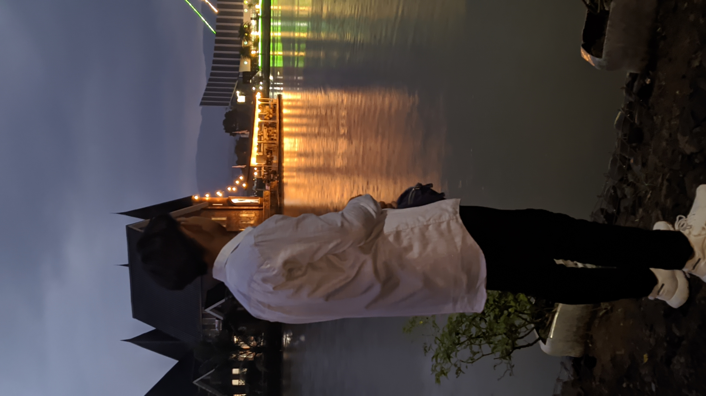

Selamat Datang
Website Pribadi Andi Setiawan

"Setiap perjalanan memiliki cerita, dan setiap cerita memiliki
seseorang yang menginspirasi."
scroll
Kenali Aku
Saya adalah seseorang yang menyukai teknologi, desain website, fotografi, dan seni. Saya percaya bahwa setiap karya memiliki cerita yang dapat dikenang. Bagi saya, membangun sesuatu — baik itu baris kode maupun sebuah bingkai foto — adalah cara untuk merawat kenangan agar tak lekang oleh waktu.
Jejak Visual
Kumpulan momen yang ingin selalu saya kenang.
Sebuah Persembahan
Terhubung Denganku
Sosial Media